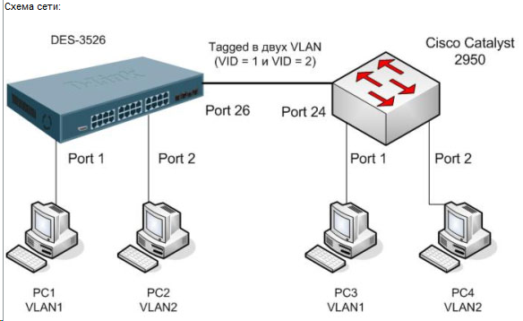

Настройка DES-3526:
# Создаём VLAN с VID=2
create vlan vlan2 tag 2
# Добавляем порт 26 в VLAN default как tagged для организации тегированной магистрали
config vlan default add tagged 26
# Удаляем порт 2 из VLAN default
config vlan default delete 2
# Добавляем порт 2 в VLAN2
config vlan vlan2 add untagged 2
# Добавляем порт 26 в VLAN2 как tagged для организации тегированной магистрали
config vlan vlan2 add tagged 26
show ipif
config ipif System ipaddress 10.36.x.x/24
или
config ipif System vlan MGMT ipadd 10.36.253.234/27 (если адрес не на дефолтном влане)
delete iproute default
create iproute default 10.36.20.254 1